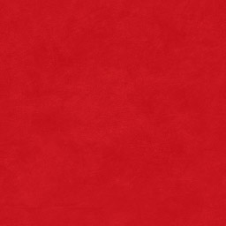
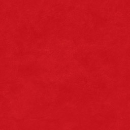
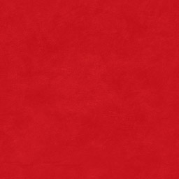
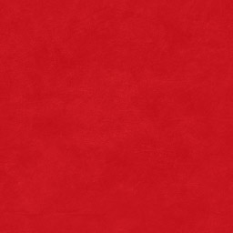
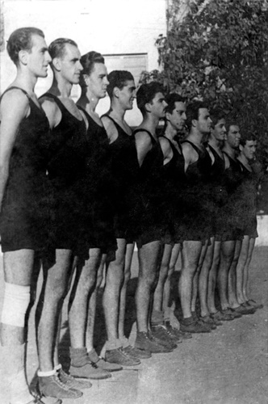

Баш као и све велике приче, тако и ова наша, има скроман почетак.
Током фебруара 1945. године омладинци, чланови Уједињеног савеза антифашистичке омладине Србије почели су
припреме за оснивачку скупштину једног омладинског фискултурног друштва са циљем да буде састављено од разних
спортских секција.
Оснивачи су дуго дискутовали око тога какво би име ваљало дати новом спортском колективу. Кумови су били
Слободан Ћосић и Зоран Жујовић. Младост или Ударник, Торпедо или Динамо, можда Локомотива …И коначно, Звезда.
Не. Црвена звезда!
У великој дворани старог ДИФ-а у Делиградској 27, 4. марта 1945. године званично је основано Омладинско
фискултурно друштво Црвена звезда. Одређене су и боје: црвено-плаво-бело са белом петокраком звездом на црвеној
мајици – дресу.
Тог поподнева остварена је и прва спортска победа.
Фудбалери Црвене звезде играли су против екипе Првог батаљона Друге бригаде КНОЈ-а и славили са 3:0.
Утакмица је одиграна на игралишту “Студента” пред 3.000 гледалаца. Поред фудбалске, Друштво је имало још
седам секција: кошаркашку, стоно-тениску, шаховску, пливачку, атлетску, одбојкашку и веслачку.
Фудбалерима и атлетичарима припао је терен С. К. Југославије, кошаркаши и одбојкаши добили су терене боб-клуба
на малом Калемегдану, веслачи и пливачи зграду на Ади Циганлији.
Одлучено је да просторије Друштва буду у улици Краља Милутина 2, у једној соби Градског одбора УСАОС-а. За првог председника је изабран Ђорђе Паљић, за потпредседнике Зоран Жујовић и Слободан Ћосић, за секретара Љубиша Секулић, за благајника Душан Богдановић, за економа Предраг Ђајић.
 Други светски рат се коначно завршио.
Други светски рат се коначно завршио.
Београђанима се полако враћала нада, и све чешће су мирно спавали и лепо сањали. Јутро је донело идеале,
а дан идоле који су махом били обучени у црвено-бело. Једни су “терали лопту”, други подно Калемегдана убацивали
кошеве, трећи пребацивали лопту преко мреже…И све што се дешавало било је – први пут.
Фудбалери Црвене звезде добили су прву утакмицу против ривала у црно-белом који ће ускоро израсти у вечитог.
Копачке су носили џентлмени, а највећи међу њима био је Рајко Митић. Три узастопно освојена Купа био је увод
у прву шампионску титулу, којој се убрзо придужила и друга.
Уместо речи кошарака, користила се
заменица
– Звезда. У десет година исто толико титула, и момака и девојака. Епитети за опис овог доба
су сувишни, довољна су презимена Поповић, Роклицер, Гец, Демшар, Калембер…
Одбојкаши су прву страну књиге клупских успеха отворили кад и фудбалери (1951), с тим што су шампионској титули додали и Куп. Очекивања која су од тренутка постојала испунили су са још два трофеја Купа и другом клупском титулом. Како изгледа бити најбољи у земљи сазнали су рукометаши, тенисери и у више наврата атлетичари и атлетичарке. Подједнако успешни били су и веслачи, који су неретко били први у свим дисциплинама. Почетком педесетих мачеваоцима Звезде није било равних у флорету и мачу. После три освојена екипна првенства почело је са великим поштовањем да се говори о нашем шаховском клубу, баш као и боксерском захваљујући шампиону Миливоју Булату.
Више информација о спортском друштву Црвена Звезда можете пронаћи на линку
sd-crvenazvezda.net